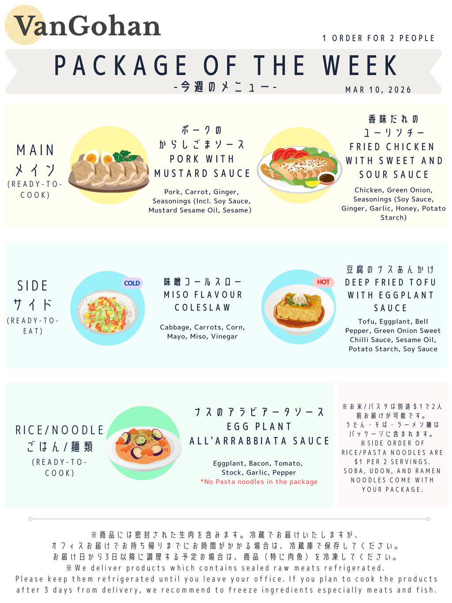

VanGohan Recipe: Week of 2025-03-31
Grilled Salmon With Mushroom Sauce
Things you need to prepare
- Cooking oil
- Salt and pepper
- 1 Tablespoon water (15ml)
Instructions
- Heat cooking oil on medium heat, grill salmon for 5-7 mins, then remove salmon on a plate
- Clean the pan and cook mushrooms with salt and pepper on high heat
- When mushrooms get soft, add Seasoning③
- Add 1 tablespoon (15ml) water in Seasoning④ cup and mix well with mushroom sauce. Then pour it on salmon
Peperoncino Pasta Sauce
Things you need to prepare
Instructions
- Boil pasta (for 2 people) with salt
- Cook bacon and vegetables with cooking oil in a pan
- Add Seasoning③ and boiled pasta then arrange on a plate
- Adjust the taste with salt
- 160g to 200g pasta before boiled are for 2 people
Stir-Fried Ginger Pork
Things you need to prepare
Instructions
- Stir-fry onion on a pan with cooking oil on medium heat until it’s soft
- Coat pork with flour and cook until lightly cooked
- Add Seasoning③, then cook on low-medium heat until the sauce is thickened. Arrange it with vegetables on a plate.
